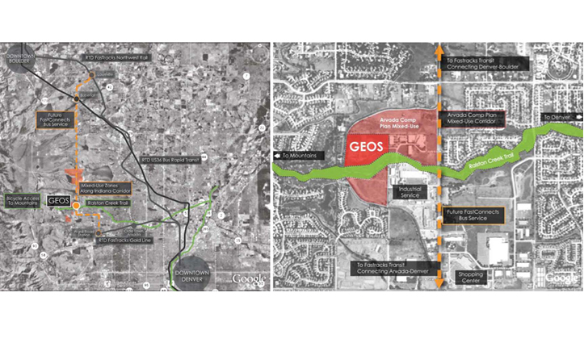
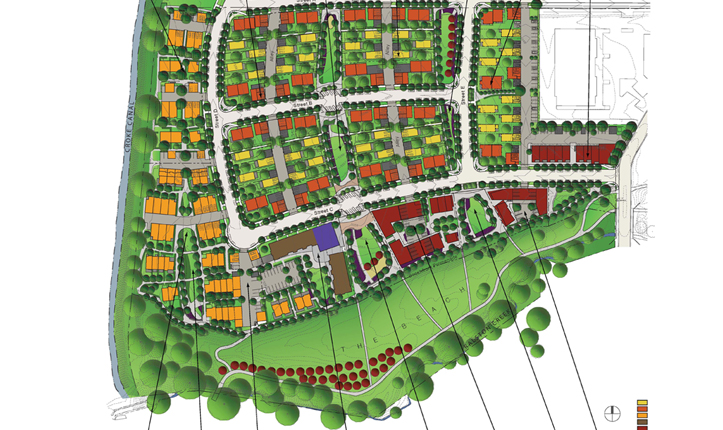
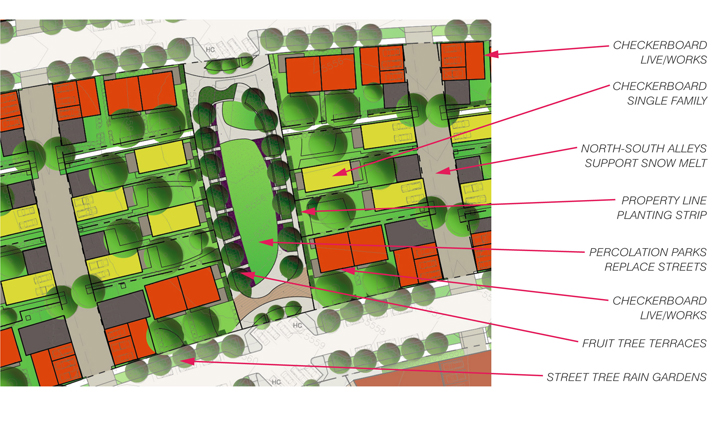
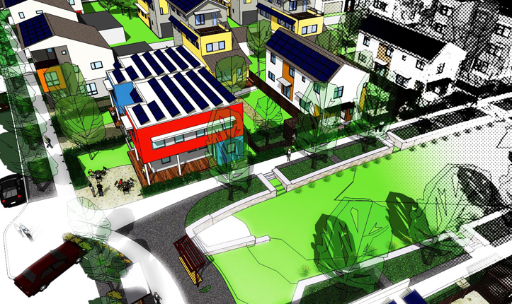
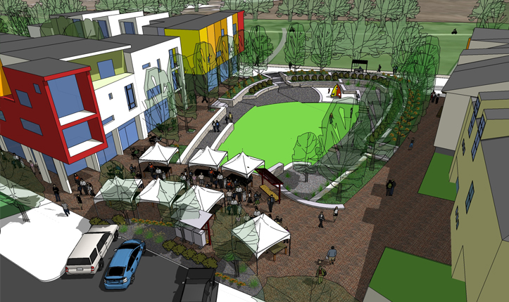
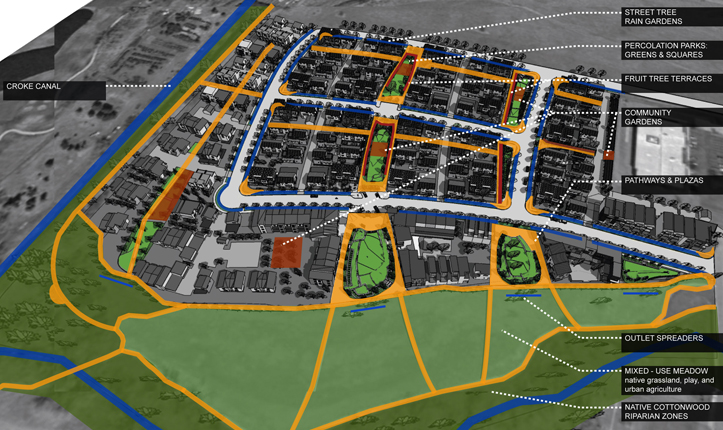
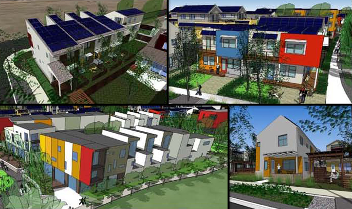
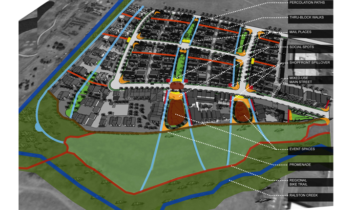

PROJECT TYPE
- Suburban
- Development Plan
- Housing Community
- Mixed-Use
- Greyfield
Environmental Benefits
- Creates Habitat for Wildlife
- Ecologically Manages Stormwater
- Generates Renewable Energy
- Improves Walkability
- Produces Food
- Solar Powered

Links
- 2009 Honor Award for Analysis and Planning (ASLA)
- Colorado’s First Geosolar Neighborhood (Discover GEOS)
- Geos Net Zero Energy Neighborhood (David Kahn Studio)
- Geos Net Zero Energy Neighborhood (Michael Tavel Architects)
- Geothermal Community in Arvada Launched (Rocky Mountain News)
- Home Sweet (green) Home (Denver Post)
Geos Net Zero Energy Neighborhood
Arvada, Colorado, U.S.A.- 
Close Me!
Geos Net Zero Energy Neighborhood is a residential, mixed-use community that will be built on 23-acres of underutilized industrial land in suburban Denver, Colorado. The project is part of the city’s comprehensive plan to intensify development along an established north-south transit corridor in order to reduce sprawl.
ASLA Honor Award Recipient, Geos Net Zero Energy Neighborhood by David Kahn Studio and Michael Tavel Architects
(Photo: David Kahn Studio and Michael Tavel Architects)Photo 1 of 8
- 
Close Me!
Geos is a vision of sustainable community planning. High-density housing and commercial buildings are laid within a green framework of natural systems, stormwater-fed landscapes, and multi-purpose civic spaces.
ASLA Honor Award Recipient, Geos Net Zero Energy Neighborhood by David Kahn Studio and Michael Tavel Architects
(Photo: David Kahn Studio and Michael Tavel Architects)Photo 2 of 8
- 
Close Me!
Guided by the bold objective of designing a community that produces 100 percent of its own energy, the architect and landscape architect worked in collaboration to merge high-performance buildings with energy-efficient landscapes. Checkerboard housing arrangements, seen here, allow each unit to gain maximum access to sunlight. This energy-efficient layout is optimal for natural day lighting and passive solar heating.
ASLA Honor Award Recipient, Geos Net Zero Energy Neighborhood by David Kahn Studio and Michael Tavel Architects
(Photo: David Kahn Studio and Michael Tavel Architects)Photo 3 of 8
- 
Close Me!
The roof of each house is equipped with photovoltaic solar panels, which help satisfy all electricity needs. Deciduous tree species are strategically chosen and placed to shade building facades without blocking the rooftop panels. Because deciduous trees lose their leaves in winter, passive solar heat and day lighting are not compromised in colder months.
ASLA Honor Award Recipient, Geos Net Zero Energy Neighborhood by David Kahn Studio and Michael Tavel Architects
(Photo: David Kahn Studio and Michael Tavel Architects)Photo 4 of 8
- 
Close Me!
Percolation parks located throughout the site function as both neighborhood green spaces and stormwater management systems, given they collect and filter runoff from streets, sidewalks, and plazas. These areas add beauty to the landscape and help frame outdoor public spaces like the mixed-use promenades, playground, and flexible lawn area shown here.
ASLA Honor Award Recipient, Geos Net Zero Energy Neighborhood by David Kahn Studio and Michael Tavel Architects
(Photo: David Kahn Studio and Michael Tavel Architects)Photo 5 of 8
- 
Close Me!
Social programming integrates nature and agriculture into the fabric of everyday life, empowering residents to take active roles in managing their resources and environment. Fruit tree terraces and community gardens are maintained and harvested by adjacent homeowners, providing a reliable source of local food production.
ASLA Honor Award Recipient, Geos Net Zero Energy Neighborhood by David Kahn Studio and Michael Tavel Architects
(Photo: David Kahn Studio and Michael Tavel Architects)Photo 6 of 8
- 
Close Me!
The Geos Neighborhood offers a wide variety of housing types and sizes that encourage diversity. Choices include single family homes, combined live/work units, connected townhomes, and senior co-housing that will attract a resident population with a range of incomes, cultures, and ages.
ASLA Honor Award Recipient, Geos Net Zero Energy Neighborhood by David Kahn Studio and Michael Tavel Architects
(Photo: David Kahn Studio and Michael Tavel Architects)Photo 7 of 8
- 
Close Me!
Pedestrian circulation paths permeate the neighborhood and encourage foot traffic. Paths line the village greens and cross between houses, facilitating social mobility and informal gathering. Walkways lead to trails within the Ralston Creek Regional Greenway, providing safe and convenient access to schools, recreation centers, and other local destinations.
Photo: ASLA Honor Award Recipient, Geos Net Zero Energy Neighborhood by David Kahn Studio and Michael Tavel Architects
(Photo: David Kahn Studio and Michael Tavel Architects)Photo 8 of 8
Project Facts
- When completed, Geos will be the largest net zero energy, urban mixed-use development in the United States. It will cover 25.2 acres and feature 282 new dwelling units and 12,000 square-feet of retail space.
- Geos will generate 100 percent of its energy from geothermal wells and photovoltaic solar panels, both renewable energy sources.
- Optimal density and building arrangement provides energy savings by maximizing passive solar heat and natural day lighting, which lowers energy consumption by one-third.
- The Geos Neighborhood will feature 8.5 acres (34 percent of site) of parks and open space, including fruit tree co-ops, community gardens, play areas, percolation parks, town squares, event spaces, and mixed-use meadows.
 This Web site has been made possible through a grant by:
This Web site has been made possible through a grant by: